Figure 2: Choose Continue without disc.

Buy VMWare Fusion, download, and install (write the serial number during installation). To get quickly started, you download a trial version for free and later buy it and register the serial number (easy).
Go to http://www.ubuntu.com/desktop/get-ubuntu/download and choose the latest 64-bit version. Save the downloaded Ubuntu file at some place you can recognize later.
Launch VMWare Fusion. You should get a window like this:
Figure 1: Choose Install Windows or another operating system in a new virtual machine.
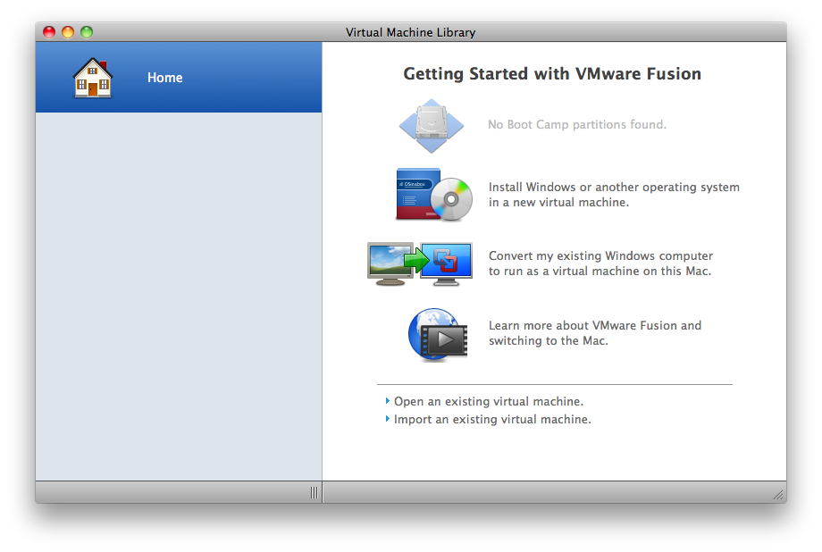
Figure 2: Choose Continue without disc.
Figure 3: Choose Use operating system installation disc image file and find the file you downloaded from the Ubuntu web page.

Figure 4: Choose Linux and Ubuntu 64-bit
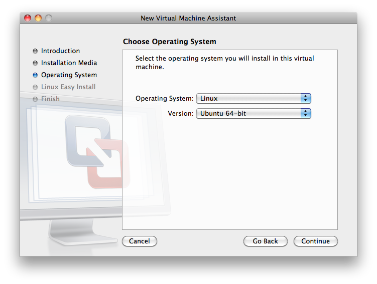
Figure 5: The simplest installation procedure makes use of the Easy Install feature. Fill in your name, desired account name, and password. Also click on Make your home folder accessible to the virtual machine as this feature makes it possible for Ubuntu and Mac to share files. Choose Read and Write so that Ubuntu is allowed to modify Mac files.
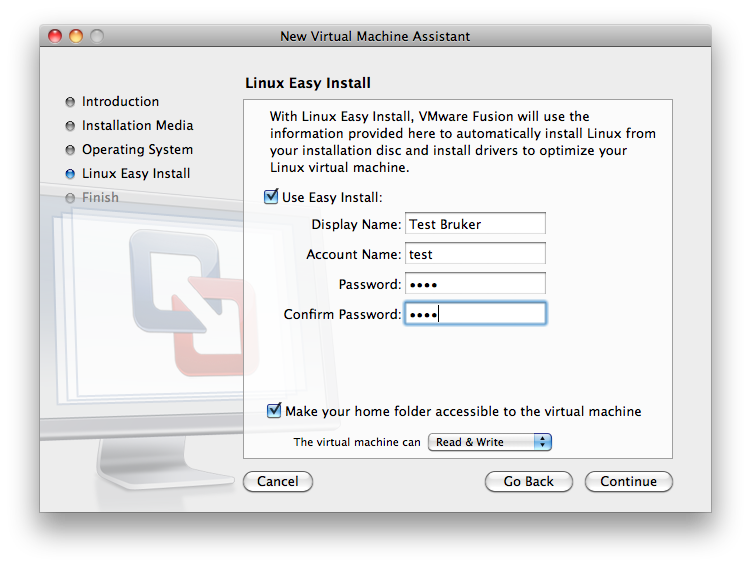
The user now will be asked to download VMWare Tools for Linux. Press download (and remember to be connected to the Internet while doing this). Note that this question is asked only the first time you install a Linux VMWare virtual machine.
Figure 6: Press Download (make sure you are connected to the Internet). This question is asked only the first time you install a Linux VMWare virtual machine.
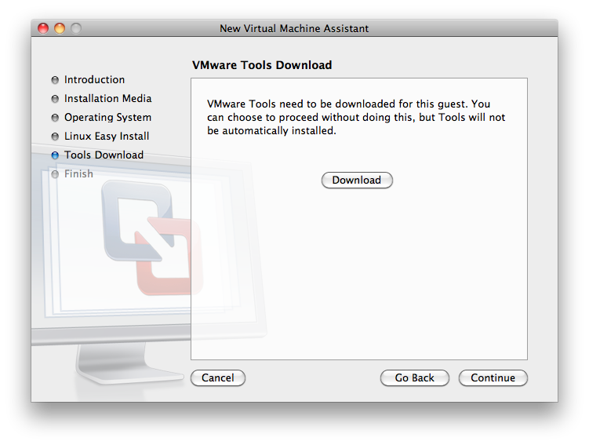

Now the default configuration of Ubuntu is shown, with 20 Gb disk space. The settings can be changed by clicking on Customize Settings, now or later. For example, the amount of memory for Ubuntu can be set (choose 2 Gb or more), as well as the number of processors, and the amount of disk space.

Figure 7: Choose where you want to store the Ubuntu iso file on the Mac hard disk, and click Save. The Ubuntu iso file is a single file containing all of Ubuntu. In the example configuration above, this file is 20 Gb. Backing up this file with, e.g., Time Machine backs up your whole Ubuntu installation, i.e.,all of Ubuntu and all of your files on Ubuntu.

Figure 8: Ubuntu now starts in VMWare Fusion. Just let it work. When this process is finished, Ubuntu is installed and you can log on with the user and password given earlier.
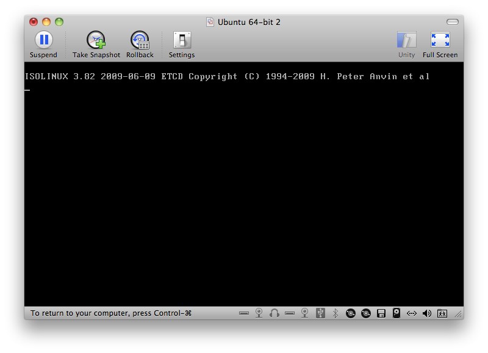
Figure 9: You can have the Ubuntu window filling the whole screen (full screen view), or you can have it as a standard window side by side with the other windows in Mac OS X.

Recall to run Update Manager in Ubuntu to update the operating system. You find the Update Manager under the menu System - Administration - Update Manager.
Multi-processor computers will normally let Ubuntu run on just one processor. The memory accessible from Ubuntu may also be (much) smaller than what the computer actually has available. At this time of writing it is unclear if a dual boot solution will give significantly more power to Ubuntu. The downside with a dual boot solution, compared to VMWare Fusion, is that the Ubuntu drivers might not be able to integrate all features of the track pad properly.
To modify the settings for processors and memory on the Ubuntu side, shut down the virtual machine by going to the VMWare Fusion menu panel og choosing Virtual Machine - Shut down. Then, in the same pull down menu, choose Settings and click on the menu item with Processors and Memory. Now the processors and memory can be adjusted to your needs for high-performance computing with Ubuntu.
Choosing too small memory (less than 1Gb) can make Ubuntu run slowly when you have a web browser with many windows for instance.
Keyboard. If your keyboard is Norwegian, you probably want to change from the default English/US keyboard in Ubuntu to Norwegian: System - Preferences - Keyboard - Layouts - Add ... - Norway. However, many prefer to do programming with an English/US keyboard and switch between this keyboard and the native language. Click on Options ... in the Layout window, choose Keys to switch keyboard layout by pressing a certain key combination, e.g., Ctrl-L + Shift-R toggles between English/US and Norwegian keyboards (very handy!).
File Sharing. You can find the Mac home folder under /mnt/hgfs on Ubuntu. Usually, you want to make a link with a more memorable name, e.g.,
If you like to use the Places dropdown menu in Ubuntu for finding files, you can choose Computer, then File System, click mnt, and finally drag hgfs to the list of places in the left part of the window. Then you have easy access to your Mac files from the Places menu.Linux> ln -s /mnt/hgfs $HOME/Mac-files
Copying text and files. Files can be copied or moved between the Mac and the Ubuntu machine. Text can also be copied. We refer to the VMWare documentation for more information.
Updating Ubuntu. See http://www.ivankristianto.com/os/ubuntu/things-you-want-to-do-after-install-ubuntu-10-04-desktop-part-2/1237/
Internet Does not Work in Ubuntu. Invoke the VMWare Fusion menu Virtual Machine - Settings - Network and test Share the Mac's network connection versus Connect directly to the physical network (Bridged).
Figure 10: Choose Install Windows or ....

Figure 11: Choose Continue without disc.
Figure 12: Choose Create a custom virtual machine.

Figure 13: Choose Linux and Ubuntu 64-bit.
Figure 14: Decide where to store the iso file (see above for explanation of what this file is).
Figure 15: Go to the Settings window (Command-E) and choose Hard Disks to specify the disc space in the virtual machine.
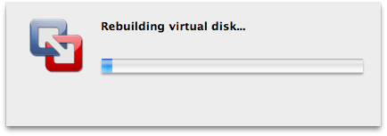
Figure 16: Choose the space you want.
Figure 17: Install Ubuntu from image file.

Figure 18: Start the virtual machine.
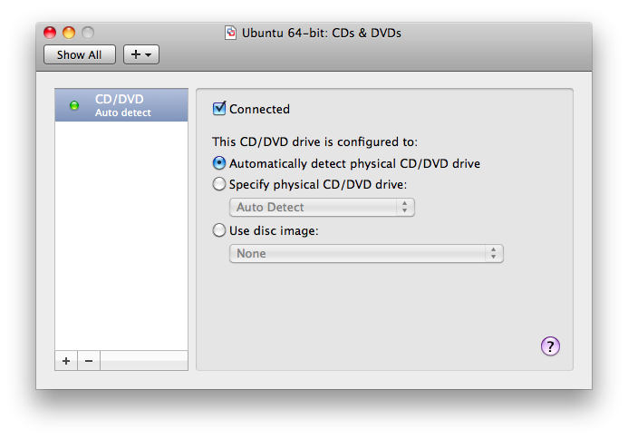

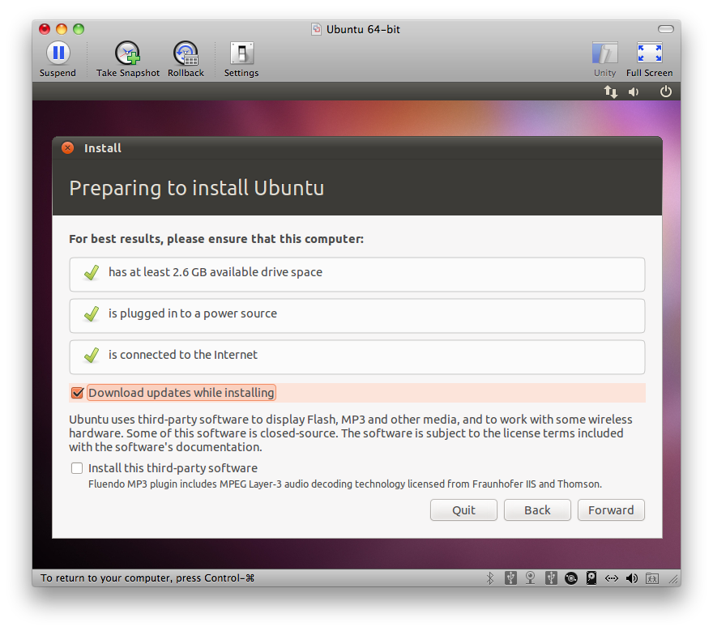

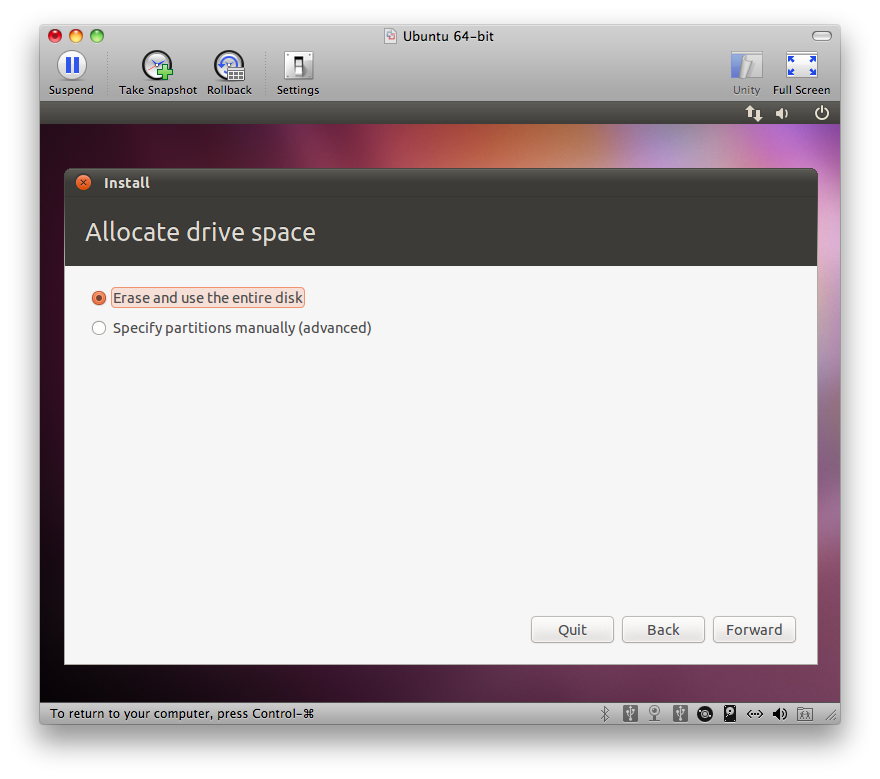
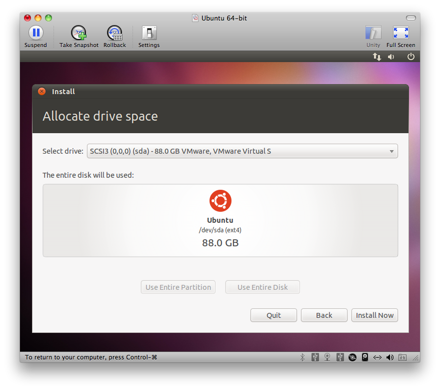
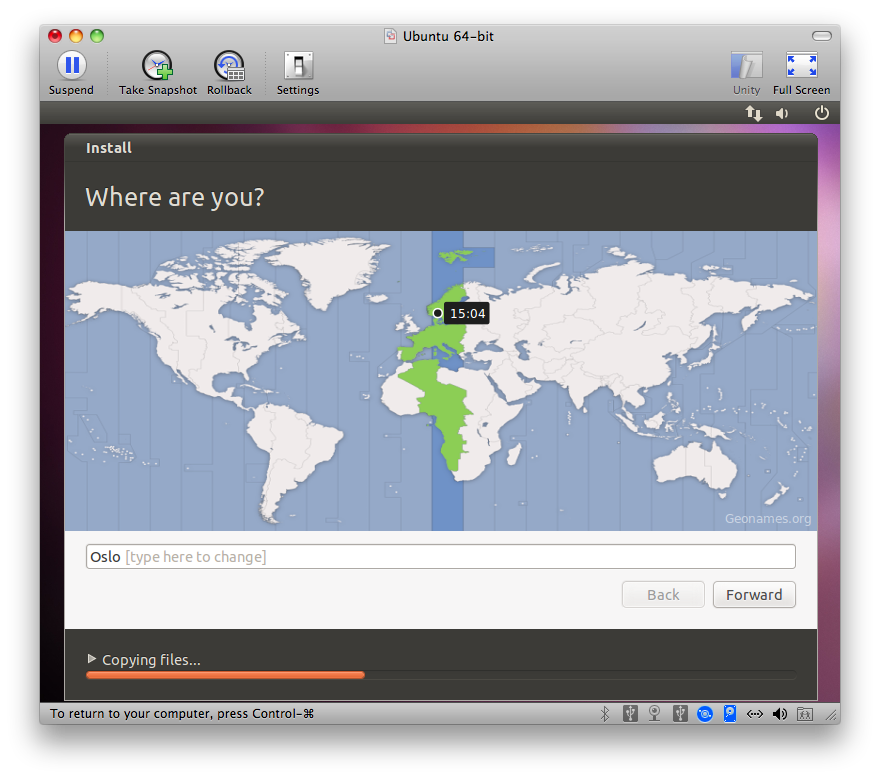


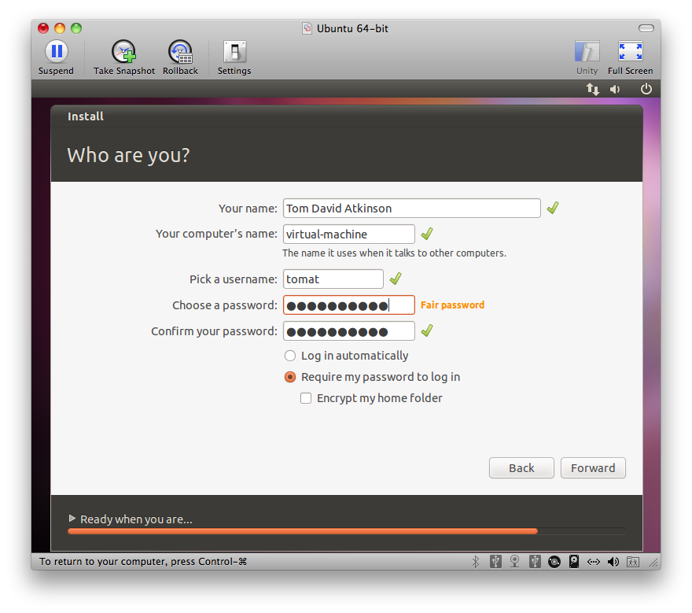
Figure 19: The user now will be asked to download VMWare Tools for Linux. Choose Download (and remember to be connected to the Internet while doing this). Note that this question is asked only the first time you install a Linux VMWare virtual machine.
Figure 20: Copy the tools directory to some place on the Ubuntu file system and run the Perl script vmware-install.pl.

Go to Settings (Command-E) and turn off shared directories, then turn on (again) the desired shared directories.